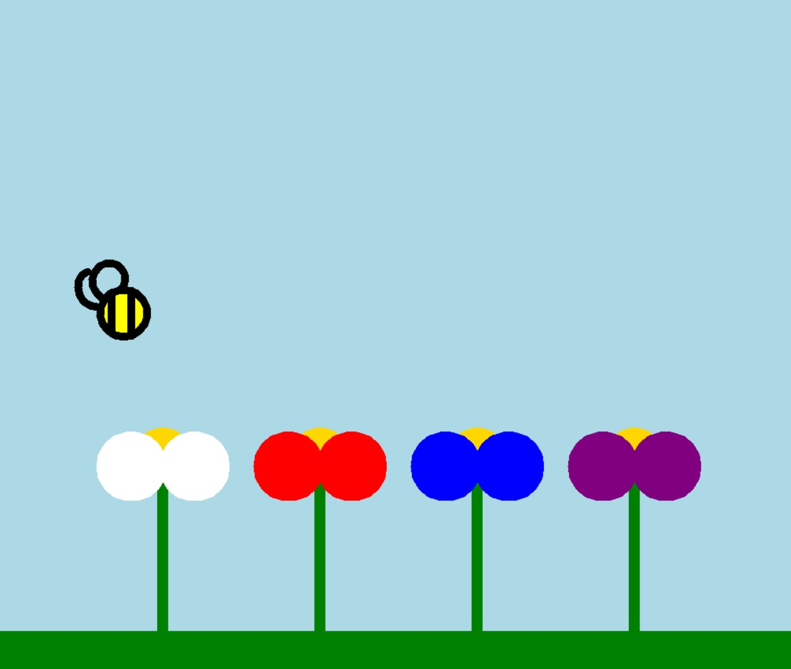
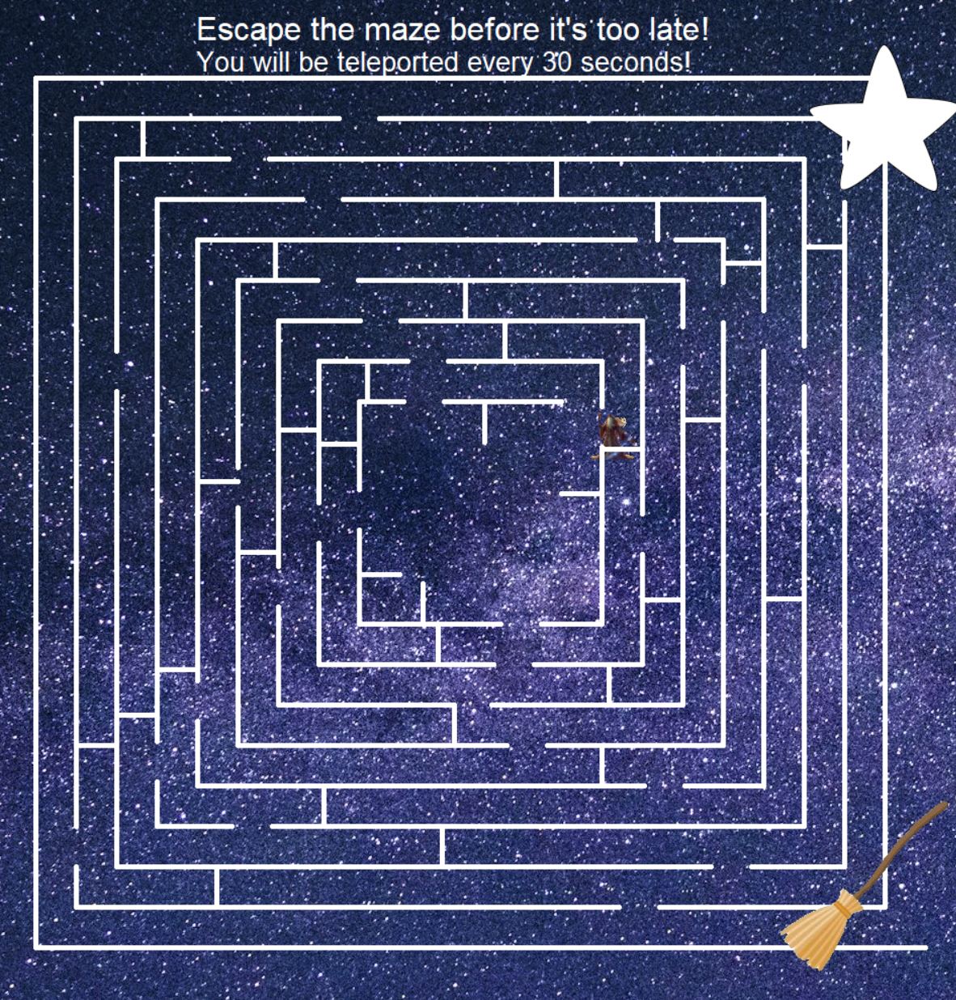
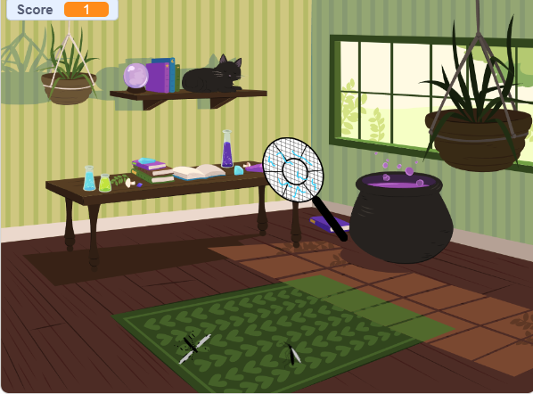
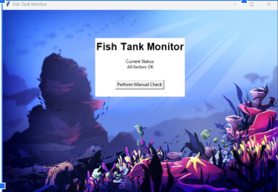

This is my Portfolio Page!
Here is my first project:
In Bee Pollination, the user inputs how many flowers they want the bee to pollinate. The flowers then grow in response to the bee movements.
Here is my second project:
In this game, the player is a wizard that is trying to reach their broom at the end of the maze. However, every 30 seconds,
they are teleported to a different spot in the maze if they do not make it out in time. The player can use arrow keys to control the wizard.
Here is my third project:
In this card, people can learn about the layers of the ocean and the animals that live in those layers.
Here is the scratch project:
Players use their mouse pointers and space bars to swat at mosquitoes. Swatting a butterfly will decrease the score by 5 points.
Here is the fish tank project:
We debugged the fish tank program so that it would work properly after a malware attack.
Here is the rover project:

We chose the inland forest because the graphs seemed to match the description, especially the occasional thunderstorms. It was difficult to match the data to the type of sensor.
Here is my portfolio:
In this game, players need to answer the math problems correctly to get their turtle into the ocean.
Here is the simulation project:
We analyzed the honeycomb simulation on NetLogo.